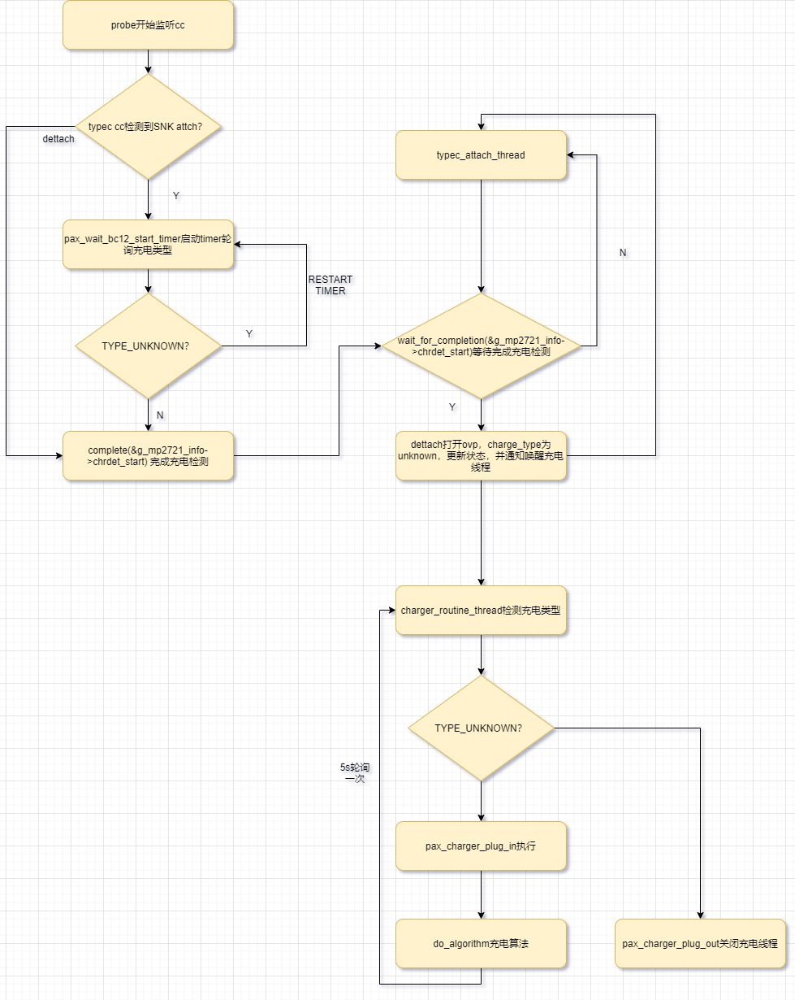
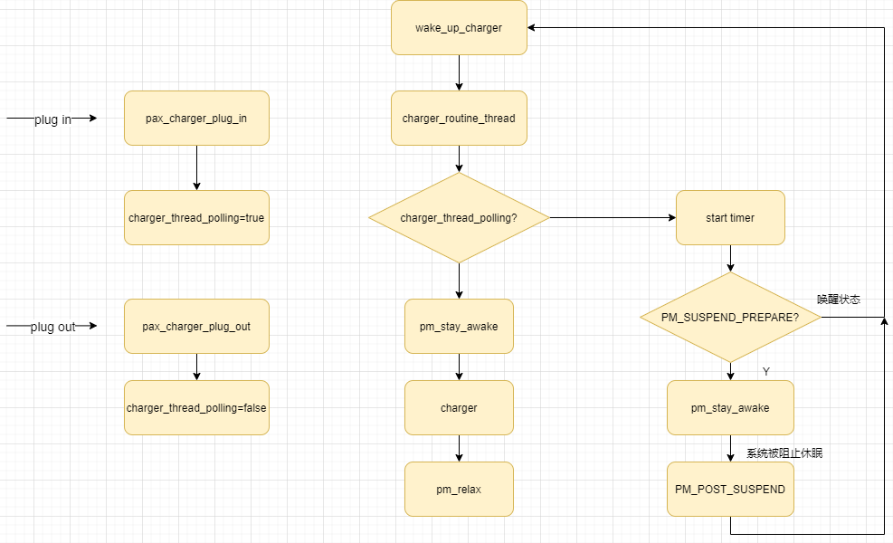
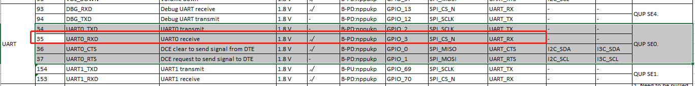
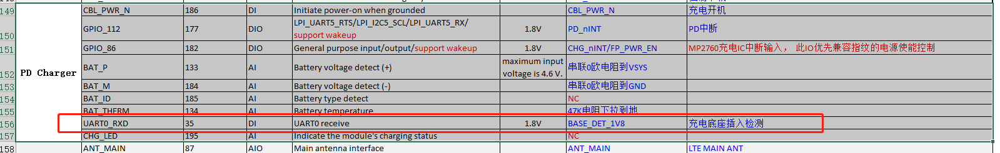

概述
目前charger使用外置的mp2721，qcom pm4125模块功能全部关闭了，需要自己搭建charger架构。
参考
架构图
目前mp2721在检测到SNK attach后，会反复轮询bc12检测是否完成，完成后会通知pax_charger并唤醒充电线程进行plug in配置充电，并5s轮询一次充电状态。 
charger_class架构介绍
charger_class.c文件封装了底层操作chargeric的一些函数，并向linux内核注册一个类文件，名称为switch_charging的类。每一个驱动ic在加载时只需要在该类文件下向内核注册名为primary_chg的设备文件即可。
charger ic注册：
dts:
mp2721@3f {
compatible = "pax,mp2721";
charger_name = "primary_chg";
}
代码：
static int mp2721_parse_dt(struct device *dev)
{
if (of_property_read_string(np, "charger_name",
&g_mp2721_info->chg_dev_name) < 0) {
g_mp2721_info->chg_dev_name = "primary_chg";
chr_mp2721_debug("%s: no charger name\n", __func__);
}
}
注册,最主要的是charger ic的ops：
static struct charger_ops mp2721_chg_ops = {
/* Normal charging */
.dump_registers = chg_dump,
.plug_out = mp2721_plug_out,
.plug_in = mp2721_plug_in,
.enable = mp2721_enable_charger,
//.enable_termination = mp2721_enable_te,
/* charging current or voltage limit */
.get_min_charging_current = mp2721_get_min_ichg,
.get_min_input_current = mp2721_get_min_aicr,
.set_input_current = mp2721_set_aicr,
.set_charging_current = mp2721_set_ichg,
.set_constant_voltage = mp2721_set_cv,
.set_mivr = mp2721_set_mivr,
.get_mivr = mp2721_get_mivr,
.is_charging_done = mp2721_get_charging_status,
/* Safety timer
.enable_safety_timer = mp2721_enable_safetytimer,
.is_safety_timer_enabled = mp2721_is_safetytimer_enable,
.set_safety_timer = mp2721_set_safetytimer,
*/
/* Power path */
.enable_powerpath = mp2721_enable_powerpath,
.is_powerpath_enabled = mp2721_get_is_powerpath_enable,
/* Charger type detection */
.get_charger_type = mp2721_charge_type,
//.enable_chg_type_det = mp2721_enable_chg_type_det,
/* OTG */
.enable_otg = mp2721_set_otg_enable,
.set_boost_current_limit = mp2721_set_otg_current,
#if 0
.get_ibus_adc = mp2721_get_ibus,
.get_vbus_adc = mp2721_get_vbus,
#endif
//.event = mp2721_do_event,
.enable_vbus_ovp = mp2721_enable_vbus_ovp,
.get_fault_status = mp2721_get_fault_status,
//set_en_hiz = mp2721_set_en_hiz,
//.get_en_hiz = mp2721_get_en_hiz,
};
static int mp2721_charger_probe(struct i2c_client *client,
const struct i2c_device_id *id)
{
mp2721_info->chg_dev = charger_dev_register(mp2721_info->chg_dev_name,
&client->dev, mp2721_info, &mp2721_chg_ops, &mp2721_info->chg_props);
}
charger_class注册函数：
charger_class.c
struct charger_device *charger_dev_register(const char *name,
struct device *parent, void *devdata,
const struct charger_ops *ops,
const struct charger_properties *props)
{
struct charger_device *chg_dev;
static struct lock_class_key key;
struct srcu_notifier_head *head;
int rc;
pr_debug("%s: name=%s\n", __func__, name);
chg_dev = kzalloc(sizeof(*chg_dev), GFP_KERNEL);
if (!chg_dev)
return ERR_PTR(-ENOMEM);
head = &chg_dev->evt_nh;
srcu_init_notifier_head(head);
/* Rename srcu's lock to avoid LockProve warning */
lockdep_init_map(&(&head->srcu)->dep_map, name, &key, 0);
mutex_init(&chg_dev->ops_lock);
chg_dev->dev.class = charger_class;
chg_dev->dev.parent = parent;
chg_dev->dev.release = charger_device_release;
dev_set_name(&chg_dev->dev, name);
dev_set_drvdata(&chg_dev->dev, devdata);
/* Copy properties */
if (props) {
memcpy(&chg_dev->props, props,
sizeof(struct charger_properties));
}
rc = device_register(&chg_dev->dev); //每一个驱动ic在加载时只需要在该类文件下向内核注册名为primary_chg的设备文件即可。
if (rc) {
kfree(chg_dev);
return ERR_PTR(rc);
}
chg_dev->ops = ops; //负责该设备的ops操作
return chg_dev;
}
static int __init charger_class_init(void)
{
charger_class = class_create(THIS_MODULE, "switching_charger");
if (IS_ERR(charger_class)) {
pr_notice("Unable to create charger class; errno = %ld\n",
PTR_ERR(charger_class));
return PTR_ERR(charger_class);
}
charger_class->dev_groups = charger_groups;
return 0;
}
subsys_initcall(charger_class_init);
pax_charger调用，首先线程会判断primary_chg有没有注册，注册了才会跑线程，不然一直阻塞：
struct charger_device *get_charger_by_name(const char *name)
{
struct device *dev;
if (!name)
return (struct charger_device *)NULL;
dev = class_find_device(charger_class, NULL, name,
charger_match_dev_by_name);
return dev ? to_charger_device(dev) : NULL;
}
static bool charger_init_algo(struct pax_charger *info)
{
info->chg1_dev = get_charger_by_name("primary_chg");
if (info->chg1_dev)
chr_err("Found primary charger\n");
else {
chr_err("*** Error : can't find primary charger ***\n");
return false;
}
return true;
}
static int charger_routine_thread(void *arg)
{
struct pax_charger *info = arg;
unsigned long flags;
static bool is_module_init_done;
bool is_charger_on;
while (1) {
wait_event(info->wait_que,
(info->charger_thread_timeout == true));
while (is_module_init_done == false) {
if (charger_init_algo(info) == true)
is_module_init_done = true;
else {
chr_err("charger_init fail\n");
msleep(5000);
}
}
}
调用历程，直接调用已注册charger_dev的ops函数：
pax_charger.c
static bool pax_is_charger_on(struct pax_charger *info)
{
int chr_type;
chr_type = pax_charger_dev_get_charger_type(info->chg1_dev);
}
pax_charger_class.c
int pax_charger_dev_get_charger_type(struct charger_device *charger_dev)
{
if (charger_dev != NULL && charger_dev->ops != NULL &&
charger_dev->ops->get_charger_type)
return charger_dev->ops->get_charger_type(charger_dev);
return -ENOTSUPP;
}
EXPORT_SYMBOL(pax_charger_dev_get_charger_type);
充电状态上报逻辑
目前MTK平台充电状态上报分为以下几种：
FULL事件在do_algorithm中轮询，并通过charger_dev_do_event通知charger ic调用power_supply_changed上报状态。EVENT_DISCHARGE和EVENT_RECHARGE事件在调用enable_charging时发送给charger ic。
static int enable_charging(struct mtk_charger *info,
bool en)
{
int i;
struct chg_alg_device *alg;
chr_err("%s %d\n", __func__, en);
#ifdef CONFIG_PAX_BMS
en = en && info->bms_charge_enable;
#endif
if (en == false) {
for (i = 0; i < MAX_ALG_NO; i++) {
alg = info->alg[i];
if (alg == NULL)
continue;
chg_alg_stop_algo(alg);
}
charger_dev_enable(info->chg1_dev, false);
charger_dev_do_event(info->chg1_dev, EVENT_DISCHARGE, 0);
} else {
charger_dev_enable(info->chg1_dev, true);
charger_dev_do_event(info->chg1_dev, EVENT_RECHARGE, 0);
}
return 0;
}
static int do_algorithm(struct mtk_charger *info)
{
if ((info->is_chg_done != chg_done) || ((last_soc != soc) && (soc >= 100))) {
if (chg_done) {
charger_dev_do_event(info->chg1_dev, EVENT_FULL, 0);
chr_err("%s battery full\n", __func__);
} else {
charger_dev_do_event(info->chg1_dev, EVENT_RECHARGE, 0);
chr_err("%s battery recharge\n", __func__);
}
}
}
pax_charger采用直接轮询charger ic状态的方式，更加方便，而且现在把psy设备注册放到pax_charger端，如果状态有变化直接调用
power_supply_changed上报状态，无需再转手。
static void pax_charger_check_status(struct pax_charger *info)
{
static char chg_status = 0;
chg_status = pax_charger_dev_get_charging_status(info->chg1_dev);
if (chg_status != info->chg_state) {
if (g_info->psy1) {
chr_err("charger status changed: chg_status = %d old_chg_status = %d\n", chg_status, info->chg_state);
power_supply_changed(g_info->psy1);
}
info->chg_state = chg_status;
}
}
static int charger_routine_thread(void *arg)
{
pax_charger_check_status(info);
}
PM电源管理
目前wakelock充电逻辑如下：

主要讲解一下充电时阻止系统进入休眠，方案流程如下：
static enum alarmtimer_restart
pax_charger_alarm_timer_func(struct alarm *alarm, ktime_t now)
{
struct pax_charger *info =
container_of(alarm, struct pax_charger, charger_timer);
if (info->is_suspend == false) {
chr_debug("%s: not suspend, wake up charger\n", __func__);
_wake_up_charger(info);
} else {
chr_info("%s: alarm timer timeout\n", __func__);
__pm_stay_awake(info->charger_wakelock);
}
return ALARMTIMER_NORESTART;
}
static void pax_charger_start_timer(struct pax_charger *info)
{
struct timespec time, time_now;
ktime_t ktime;
int ret = 0;
/* If the timer was already set, cancel it */
ret = alarm_try_to_cancel(&info->charger_timer);
if (ret < 0) {
chr_err("%s: callback was running, skip timer\n", __func__);
return;
}
get_monotonic_boottime(&time_now);
time.tv_sec = info->polling_interval;
time.tv_nsec = 0;
info->endtime = timespec_add(time_now, time);
ktime = ktime_set(info->endtime.tv_sec, info->endtime.tv_nsec);
//chr_err("%s: alarm timer start:%d, %ld %ld\n", __func__, ret,
// info->endtime.tv_sec, info->endtime.tv_nsec);
alarm_start(&info->charger_timer, ktime);
}
#ifdef CONFIG_PM
static int charger_pm_event(struct notifier_block *notifier,
unsigned long pm_event, void *unused)
{
struct timespec now;
struct pax_charger *info;
info = container_of(notifier,
struct pax_charger, pm_notifier);
switch (pm_event) {
case PM_SUSPEND_PREPARE:
info->is_suspend = true;
chr_err("%s: enter PM_SUSPEND_PREPARE\n", __func__);
break;
case PM_POST_SUSPEND:
info->is_suspend = false;
chr_err("%s: enter PM_POST_SUSPEND\n", __func__);
get_monotonic_boottime(&now);
if (timespec_compare(&now, &info->endtime) >= 0 &&
info->endtime.tv_sec != 0 &&
info->endtime.tv_nsec != 0) {
chr_err("%s: alarm timeout, wake up charger\n",
__func__);
__pm_relax(info->charger_wakelock);
info->endtime.tv_sec = 0;
info->endtime.tv_nsec = 0;
_wake_up_charger(info);
}
break;
default:
break;
}
return NOTIFY_DONE;
}
#endif /* CONFIG_PM */
static int charger_routine_thread(void *arg)
{
mutex_lock(&info->charger_lock);
spin_lock_irqsave(&info->slock, flags);
if (!info->charger_wakelock->active)
__pm_stay_awake(info->charger_wakelock); //进入线程，持锁
spin_unlock_irqrestore(&info->slock, flags);
info->charger_thread_timeout = false;
if (info->charger_thread_polling == true)
pax_charger_start_timer(info);
spin_lock_irqsave(&info->slock, flags);
__pm_relax(info->charger_wakelock);
spin_unlock_irqrestore(&info->slock, flags);
chr_debug("%s end , %d\n",
__func__, info->charger_thread_timeout);
mutex_unlock(&info->charger_lock);
}
probe()
{
#ifdef CONFIG_PM
info->pm_notifier.notifier_call = charger_pm_event;
}
休眠唤醒流程如下：
1、
PM_SUSPEND_PREPARE阶段:当系统调用suspend_prepare做进一步suspend前期准备工作，准备控制台，冻结内核线程等，此时充电线程is_suspend标志位置1。2、定时器超时函数
pax_charger_alarm_timer_func，根据is_suspend状态，这里会持锁唤醒系统。3、
PM_POST_SUSPEND阶段:唤醒后进入PM_POST_SUSPEND阶段，就是退出休眠，并唤醒充电线程。
以下是阻止休眠的全过程打印：
[10990.074535] PM: suspend entry (deep)
[10990.078255] PM: Syncing filesystems ... done.
[10990.193251] PAX_CHG: charger_pm_event: enter PM_SUSPEND_PREPARE //调用suspend_prepare做进一步suspend前期准备工作，准备控制台，冻结内核线程等
[10990.199399] Freezing user space processes ...
[10990.200488] i2c_read: err wakeup of wq
[10990.215157] (elapsed 0.015 seconds) done.
[10990.219229] OOM killer disabled.
[10990.222500] Freezing remaining freezable tasks ... (elapsed 0.004 seconds) done.
[10990.234057] Suspending console(s) (use no_console_suspend to debug)
[10990.245041] ILITEK: (ilitek_tp_pm_suspend, 765): CALL BACK TP PM SUSPEND
[10990.255154] [Binder][0x474f46a859][13:37:07.732510] wlan: [4210:I:HDD] __wlan_hdd_bus_suspend: 1035: starting bus suspend
[10990.258777] ======sp_cat_tp_suspend 336
[10990.258791] [pax_authinfo]: gpio_sleep_sp, en=1
[10990.258791]
[10990.258812] PAX_BMS:bms_suspend. secs = 572700
[10990.258838] pax_base_detect_suspend
[10990.378107] Disabling non-boot CPUs ...
[10990.378846] IRQ 6: no longer affine to CPU1
[10990.379073] CPU1: shutdown
[10990.379642] psci: CPU1 killed (polled 4 ms)
[10990.380939] IRQ 1: no longer affine to CPU2
[10990.381172] CPU2: shutdown
[10990.382284] psci: CPU2 killed (polled 0 ms)
[10990.384069] CPU3: shutdown
[10990.384115] psci: CPU3 killed (polled 0 ms)
[10990.384718] suspend ns: 10990384714503 suspend cycles: 306275196449
[10990.384714] resume cycles: 306373970012
[10990.384761] pm_system_irq_wakeup: 173 triggered pm8xxx_rtc_alarm
[10990.385117] PAX_CHG: pax_charger_alarm_timer_func: alarm timer timeout //定时器超时函数，这里会持锁唤醒系统
[10990.385230] Enabling non-boot CPUs ...
[10990.385768] Detected VIPT I-cache on CPU1
[10990.385843] arch_timer: CPU1: Trapping CNTVCT access
[10990.385895] CPU1: Booted secondary processor 0x0000000001 [0x51af8014]
[10990.386670] CPU1 is up
[10990.387438] Detected VIPT I-cache on CPU2
[10990.387518] arch_timer: CPU2: Trapping CNTVCT access
[10990.387566] CPU2: Booted secondary processor 0x0000000002 [0x51af8014]
[10990.388390] CPU2 is up
[10990.389089] Detected VIPT I-cache on CPU3
[10990.389169] arch_timer: CPU3: Trapping CNTVCT access
[10990.389220] CPU3: Booted secondary processor 0x0000000003 [0x51af8014]
[10990.389987] CPU3 is up
[10990.506155] pax_base_detect_resume
[10990.506957] PAX_BAT: pax_battery_resume: pre_soc: 100 soc: 100
[10990.507767] ======sp_cat_tp_resume 347
[10990.507931] ///PD dbg info 122d
[10990.507937] <10990.507>TCPC-TCPC:bat_update_work_func battery update soc = 100
[10990.507937] <10990.507>TCPC-TCPC:bat_update_work_func Battery Idle
[10990.510388] [Binder][0x475574994c][13:37:13.132203] wlan: [4210:I:HDD] wlan_hdd_bus_resume: 1226: starting bus resume
[10990.513090] ILITEK: (drm_notifier_callback, 471): DRM event:2,blank:3
[10990.513094] ILITEK: (drm_notifier_callback, 492): DRM BLANK(3) do not need process
[10990.513147] ILITEK: (drm_notifier_callback, 471): DRM event:1,blank:3
[10990.513149] ILITEK: (drm_notifier_callback, 492): DRM BLANK(3) do not need process
[10990.513663] ILITEK: (ilitek_tp_pm_resume, 779): CALL BACK TP PM RESUME
[10990.577217] PAX_BAT: [status:Full, health:Good, present:1, tech:Li-ion, capcity:100,cap_rm:5045 mah, vol:4301 mv, temp:29, curr:0 ma, ui_soc:100]
[10990.577935] ///PD dbg info 122d
[10990.581826] OOM killer enabled.
[10990.584558] <10990.577>TCPC-TCPC:bat_update_work_func battery update soc = 100
[10990.584558] <10990.577>TCPC-TCPC:bat_update_work_func Battery Idle
[10990.778158] Restarting tasks ...
[10990.784613] healthd: battery l=100 v=4301 t=29.0 h=2 st=5 c=0 fc=5045000 cc=6 chg=u
[10990.790006] done.
[10990.797764] thermal thermal_zone26: failed to read out thermal zone (-61)
[10990.804820] PAX_CHG: charger_pm_event: enter PM_POST_SUSPEND //唤醒后进入PM_POST_SUSPEND阶段，就是退出休眠
[10990.810534] PAX_CHG: charger_pm_event: alarm timeout, wake up charger //并唤醒充电线程
[10990.817061] Resume caused by IRQ 173, pm8xxx_rtc_alarm
[10990.817305] PAX_CHG: pax_is_charger_on chr_type = [DCP] last_chr_type = [DCP]
[10990.822242] PM: suspend exit
底座充电功能开发
硬件信息：
 
问题点
bc1.2轮询方案
我们目前需要等待usb先做完bc1.2，才开始执行充电，目前采用timer轮询的方案，如下：
static void pax_wait_bc12_start_timer(void)
{
struct timespec time, time_now;
ktime_t ktime;
int ret = 0;
/* If the timer was already set, cancel it */
ret = alarm_try_to_cancel(&g_info->wait_bc12_timer);
get_monotonic_boottime(&time_now);
time.tv_sec = 0;
time.tv_nsec = CHR_BC12_POLL_INTERVAL*1000*1000;
g_info->waitbc12_endtime = timespec_add(time_now, time);
ktime = ktime_set(g_info->endtime.tv_sec, g_info->waitbc12_endtime.tv_nsec);
pr_err("%s: alarm timer start:%d, %ld %ld\n", __func__, ret,
g_info->waitbc12_endtime.tv_sec, g_info->waitbc12_endtime.tv_nsec);
alarm_start(&g_info->wait_bc12_timer, ktime);
}
static enum alarmtimer_restart
pax_wait_bc12_alarm_timer_func(struct alarm *alarm, ktime_t now)
{
uint8_t type = TYPEC_UNATTACHED;
type = g_info->typec_state;
g_info->chr_type = pax_charger_dev_get_charger_type(g_info->chg1_dev);
pr_err("111type=%d, chg_type=%d, count=%d\n", type,
g_info->chr_type, g_info->wait_bc12_count);
if (!g_info->attach)
goto out;
if (g_info->chr_type != POWER_SUPPLY_TYPE_UNKNOWN ||
g_info->wait_bc12_count >= 50) {
g_info->wait_bc12_count = 0;
/* start charging after getting the charging type */
_wake_up_charger(g_info);
pr_err("get charger type OK\n");
} else {
pr_err("restart pax_wait_bc12_alarm_timer_func\n");
g_info->wait_bc12_count++;
pax_wait_bc12_start_timer();
}
out:
pr_err("device check bc12 fail!\n");
return ALARMTIMER_NORESTART;
}
static void pax_charger_init_timer(struct pax_charger *info)
{
alarm_init(&info->charger_timer, ALARM_BOOTTIME,
pax_charger_alarm_timer_func);
pax_charger_start_timer(info);
alarm_init(&info->wait_bc12_timer, ALARM_BOOTTIME,
pax_wait_bc12_alarm_timer_func); //初始化timer
#ifdef CONFIG_PM
if (register_pm_notifier(&info->pm_notifier))
chr_err("%s: register pm failed\n", __func__);
#endif /* CONFIG_PM */
}
在这里调用：
void handle_typec_attach_dettach(bool en)
{
union power_supply_propval val;
chr_err("%s: ++ en:%d g_info->sink_mv_new = %d\n", __func__,en,g_info->sink_mv_new);
mutex_lock(&g_info->attach_lock);
/* The thread notifies the pax charger that the device is connected */
g_info->attach = en;
if (en) {
/* turn on the timer to poll the charging type when the device is connected */
pax_wait_bc12_start_timer();
}
else {
/* set prop unknown after device is disconnected */
val.intval = POWER_SUPPLY_USB_TYPE_UNKNOWN;
power_supply_set_property(g_info->usb_psy, POWER_SUPPLY_PROP_REAL_TYPE,
&val);
}
mutex_unlock(&g_info->attach_lock);
}
typec发送通知：
case TCP_NOTIFY_TYPEC_STATE:
old_state = noti->typec_state.old_state;
new_state = noti->typec_state.new_state;
if (old_state == TYPEC_UNATTACHED &&
(new_state == TYPEC_ATTACHED_SNK ||
new_state == TYPEC_ATTACHED_NORP_SRC ||
new_state == TYPEC_ATTACHED_CUSTOM_SRC ||
new_state == TYPEC_ATTACHED_DBGACC_SNK)) {
dev_err(rpmd->dev,
"%s Charger plug in, polarity = %d\n",
__func__, noti->typec_state.polarity);
/*
* start charger type detection,
* and enable device connection
*/
cancel_delayed_work_sync(&rpmd->usb_dwork);
rpmd->usb_dr = DR_DEVICE;
rpmd->usb_type_polling_cnt = 0;
schedule_delayed_work(&rpmd->usb_dwork,
msecs_to_jiffies(
USB_TYPE_POLLING_INTERVAL));
typec_set_data_role(rpmd->typec_port, TYPEC_DEVICE);
typec_set_pwr_role(rpmd->typec_port, TYPEC_SINK);
typec_set_pwr_opmode(rpmd->typec_port,
noti->typec_state.rp_level -
TYPEC_CC_VOLT_SNK_DFT);
typec_set_vconn_role(rpmd->typec_port, TYPEC_SINK);
set_charger_plug_status(1);
}
发现timer需要先轮询跑完，再跑usb_dwork发送通知给usb作切换，就没作用，需要换成dwork形式进行轮询：
static void pax_wait_bc12_work(struct work_struct *work)
{
g_info->chr_type = pax_charger_dev_get_charger_type(g_info->chg1_dev);
pr_err("chg_type=%d, count=%d\n",
g_info->chr_type, g_info->wait_bc12_count);
if (!g_info->attach) {
cancel_delayed_work(&g_info->wait_bc12_dwork);
}
if (g_info->chr_type != POWER_SUPPLY_TYPE_UNKNOWN ||
g_info->wait_bc12_count >= 50) {
g_info->wait_bc12_count = 0;
/* start charging after getting the charging type */
_wake_up_charger(g_info);
pr_err("get charger type OK\n");
} else {
pr_err("restart pax_wait_bc12 dwork\n");
g_info->wait_bc12_count++;
cancel_delayed_work(&g_info->wait_bc12_dwork);
schedule_delayed_work(&g_info->wait_bc12_dwork, msecs_to_jiffies(CHR_BC12_POLL_INTERVAL));
}
}
void handle_typec_attach_dettach(bool en)
{
union power_supply_propval val;
chr_err("%s: ++ en:%d g_info->sink_mv_new = %d\n", __func__,en,g_info->sink_mv_new);
mutex_lock(&g_info->attach_lock);
/* The thread notifies the pax charger that the device is connected */
g_info->attach = en;
if (en) {
/* turn on the timer to poll the charging type when the device is connected */
schedule_delayed_work(&g_info->wait_bc12_dwork, msecs_to_jiffies(CHR_BC12_POLL_INTERVAL));
}
else {
/* set prop unknown after device is disconnected */
val.intval = POWER_SUPPLY_USB_TYPE_UNKNOWN;
power_supply_set_property(g_info->usb_psy, POWER_SUPPLY_PROP_REAL_TYPE,
&val);
}
mutex_unlock(&g_info->attach_lock);
}
打印如下,可以看到轮询了5次，也就是250ms才得到充电类型：
[ 859.346234] pax-pd-manager soc:pax_pd_manager: pd_tcp_notifier_call event = 10
[ 859.364617] pax-pd-manager soc:pax_pd_manager: pd_tcp_notifier_call sink vbus 5000mV 100mA type(0x01)
[ 859.377953] pax-pd-manager soc:pax_pd_manager: pd_tcp_notifier_call event = 14
[ 859.385984] pax-pd-manager soc:pax_pd_manager: pd_tcp_notifier_call Charger plug in, polarity = 0
[ 859.395758] plug status: 1
[ 859.400562] init: Control message: Could not find 'android.hardware.soundtrigger@2.0::ISoundTriggerHw/default' for ctl.interface_start from pid: 407 (/system/bin/hwservicemanager)
[ 859.417091] pax-pd-manager soc:pax_pd_manager: usb_dwork_handler Device
[ 859.423999] extcon extcon2: extcon_set_state_sync id = 2 state = 0
[ 859.430939] extcon extcon2: extcon_set_state_sync state 1
[ 859.437289] extcon extcon2: extcon_set_state_sync id = 1 state = 1
[ 859.444120] extcon extcon2: extcon_set_state_sync state 1
[ 859.449662] extcon extcon2: extcon_sync state 1
[ 859.454407] extcon extcon2: extcon_sync state 2 index = 0
[ 859.459955] extcon extcon2: extcon_sync state 3
[ 859.464821] msm-qusb-phy 1613000.qusb: Got VBUS notification: 1
[ 859.470872] extcon extcon2: name_show = NAME=soc:pax_pd_manager
[ 859.476819] extcon extcon2: state_show = STATE=USB=1
[ 859.476819] USB-HOST=0
[ 859.488540] chg_type=0, count=0
[ 859.491710] restart pax_wait_bc12 dwork
[ 859.495755] msm-qusb-phy 1613000.qusb: state: 0
[ 859.500526] msm-qusb-phy 1613000.qusb: qusb_phy_enable_power turn on regulators
[ 859.508491] msm-qusb-phy 1613000.qusb: min_vol:925000 max_vol:970000
[ 859.520947] msm-qusb-phy 1613000.qusb: qusb_phy_enable_clocks(): on:1
[ 859.527608] msm-qusb-phy 1613000.qusb: state: 1
[ 859.548206] chg_type=0, count=1
[ 859.551367] restart pax_wait_bc12 dwork
[ 859.584748] msm-qusb-phy 1613000.qusb: state: 2
[ 859.589466] msm-qusb-phy 1613000.qusb: state: 1 reg: 0x0
[ 859.595064] msm-qusb-phy 1613000.qusb: state: 2
[ 859.608212] chg_type=0, count=2
[ 859.614515] restart pax_wait_bc12 dwork
[ 859.668206] chg_type=0, count=3
[ 859.671392] restart pax_wait_bc12 dwork
[ 859.696608] msm-qusb-phy 1613000.qusb: state: 3
[ 859.701468] msm-qusb-phy 1613000.qusb: state: 2 reg: 0x0
[ 859.711492] msm-qusb-phy 1613000.qusb: qusb_phy_enable_clocks(): on:0
[ 859.718749] msm-qusb-phy 1613000.qusb: qusb_phy_enable_power turn off regulators
[ 859.727840] chg_type=0, count=4
[ 859.732692] restart pax_wait_bc12 dwork
[ 859.736817] msm-qusb-phy 1613000.qusb: min_vol:0 max_vol:970000
[ 859.743300] msm-qusb-phy 1613000.qusb: QUSB PHY's regulators are turned OFF.
[ 859.750898] msm-qusb-phy 1613000.qusb: Notify charger type: 4
[ 859.756872] mp2721 0-003f: mp2721_set_property() set charge_type:4, ret:0
[ 859.763816] msm-qusb-phy 1613000.qusb: Notify event: 1 for extcon_id: 1
[ 859.763828] extcon extcon3: extcon_set_state_sync id = 1 state = 1
[ 859.776918] extcon extcon3: extcon_set_state_sync state 1
[ 859.782469] extcon extcon3: extcon_sync state 1
[ 859.787595] extcon extcon3: extcon_sync state 2 index = 0
[ 859.793356] extcon extcon3: extcon_sync state 3
[ 859.798396] msm-dwc3 4e00000.ssusb: vbus:1 event received
[ 859.803982] msm-dwc3 4e00000.ssusb: edev:1613000.qusb
[ 859.809457] extcon extcon3: name_show = NAME=1613000.qusb
[ 859.810420] msm-dwc3 4e00000.ssusb: dwc3_resume_work: dwc3 resume work
[ 859.814892] extcon extcon3: state_show = STATE=USB=1
[ 859.814892] USB-HOST=0
[ 859.815757] msm-dwc3 4e00000.ssusb: XCVR: ID set
[ 859.820883] chg_type=4, count=5
[ 859.820919] get charger type OK
[ 859.820932] msm-qusb-phy 1613000.qusb: state: 5
[ 859.829601] pax_is_charger_on chr_type = 4
貌似这样做会阻塞typec通知，快速拔插会造成死机。
charger_routine_thread不能加msleep
参考：
首先，执行了sleep，就可能切换到其它进程，此时，并没有调用spin_unlock释放锁。当另外的进程(线程)再次调用同一驱动时，需要获取相同的spin lock，由于之前并没有释放锁，于是就出现死锁了。
鉴于此，只能放弃msleep的做法，而使用循环达到延时的目标。